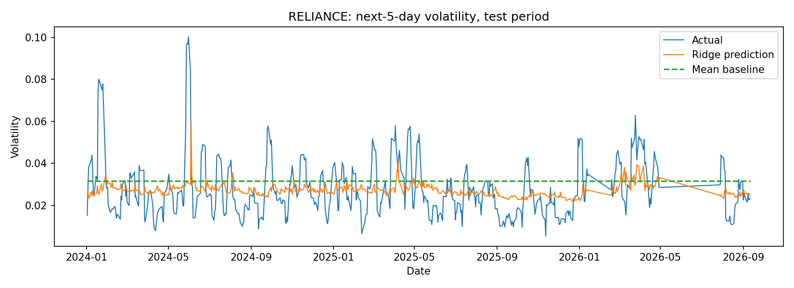
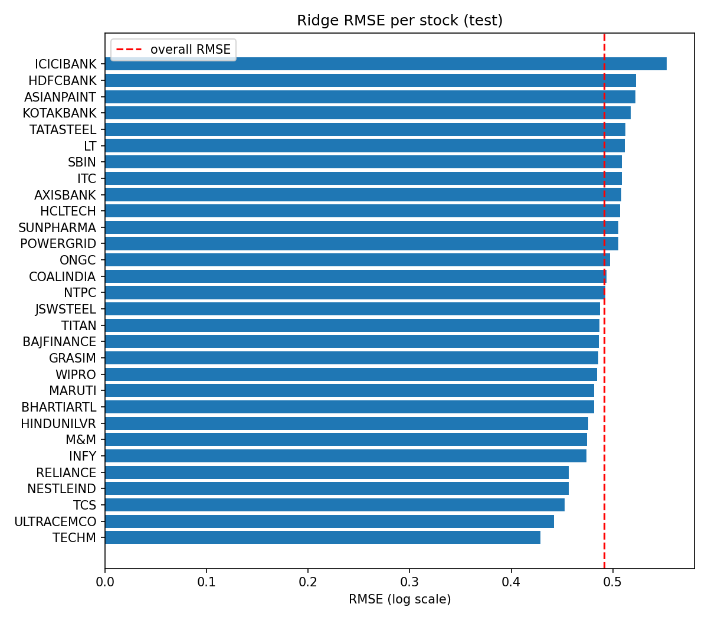
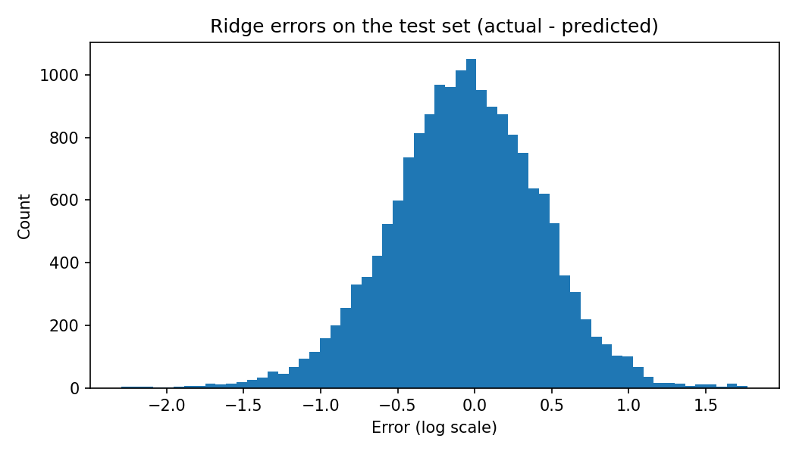

Forecasting 5-Day Stock Volatility
How much will a stock move over the next week? A regularized machine learning model predicting realized volatility (target_rv_5) across 30 large Indian companies — trained on 2015–2021, validated on 2022–2023, and evaluated on unseen 2024–2026 test data.
Try the model
Enter what is known when a trading day closes and get the model’s forecast for how big that stock’s moves will be over the next five trading days. Start from a real example day, or change any value. This runs the actual fitted model in your browser: it clips and scales the inputs, then multiplies them by the ridge weights, exactly as the Python code does.
Explore the predictions
Pick a stock and a window. Each point is one test day: the model’s forecast for the next five days, next to what actually happened.
Hover, tap or use the left and right arrow keys on the chart to read values. Lines break where the data has gaps of more than a week.
- Days in view
- –
- Model error (RMSE)
- –
- Baseline error (RMSE)
- –
- Model versus baseline
- –
- Largest miss in view
- –
Error is measured on the log scale, the scale the model was fitted on, so a miss of 0.5 means roughly a 1.6 times difference. Lower is better. Predictions are shown as volatility, converted back from the log scale.
The question
For each stock and each day, predict how large its price moves will be over the next five trading days, using only what was known when that day’s market closed.
The quantity being predicted, target_rv_5, is the square root of the sum of the squared daily log returns over the next five trading days. A value of 0.03 means those five daily moves add up, in root-sum-of-squares terms, to about 3%. It measures how big the moves are, not whether prices rise or fall.
The model predicts the logarithm of this quantity. Volatility is skewed, with a few wild weeks stretching the scale, and the log makes it far more even.

What this does not claim
The model says nothing about the direction of prices and is not trading advice. The conclusions apply to these 30 stocks and to 2015–2026, though the checks explore how well they hold up across years and stocks.
- target_rv_5
- The thing being predicted: realized volatility over the next five trading days, computed from the five daily log returns that follow day t.
- log_target
log(target_rv_5), the quantity the regression model is actually fitted to.- rv_5
- Five-day realized volatility looking backwards from day t. Used as an input and in the persistence baseline.
- vix
- The India VIX index level at day t close, measuring market-wide implied volatility.
- lambda (λ)
- The ridge regression penalty parameter. Higher values shrink coefficients towards zero to prevent overfitting.
- RMSE
- Root mean squared error on the log scale: the standard metric for penalizing prediction misses.
The data
Daily prices and volumes for 30 large Indian companies, from January 2015 to September 2026. The dataset contains 77,490 rows before cleaning, covering banking, IT, energy, FMCG, pharma, auto, metals and infrastructure.
Cleaning and integrity checks
Data cleaning steps applied sequentially:
- Duplicate rows (same stock, same day) were removed (3 rows).
- Missing values were dropped (15 rows).
- One feature,
ret_lag1, had missing values filled with zero; it was rebuilt from the previous day's return for that stock. - A few rows had zero trading volume or high equal to low; these were removed as non-trading days.
- Extreme moves, such as 23 March 2020, look like real events and were kept.
In total 336 of 77,490 rows (0.43%) were removed.

How the model was built
The data is split chronologically by date, never shuffled. To prevent data leakage caused by overlapping 5-day windows, an 8-day purge gap separates each split:
Capping limits and standard scaling statistics are derived strictly from the training set and applied forward to validation and test.
Results
All numbers below are evaluated on the out-of-sample test period (2024 to September 2026), with λ fixed from validation. Error is RMSE on the log scale (lower is better):
| Model | Test error (RMSE) | Typical miss (MAE) | Versus training average |
|---|---|---|---|
| Training average | 0.5503 | 0.4343 | baseline |
| Persistence | 0.6674 | 0.5227 | 21.3% worse |
| One-feature regression | 0.5253 | 0.4121 | 4.5% better |
| Linear regression | 0.4981 | 0.3903 | 9.5% better |
| Ridge regression | 0.4915 | 0.3847 | 10.7% better |
Persistence performs significantly worse than the training average. Short-term volatility and next week’s volatility are only moderately correlated in this market, so copying recent volatility injects more variance than signal.
Is the gain real?
Resampling whole weeks of the test period 1,000 times gives a 95% bootstrap confidence interval of 8.8% to 12.7% for ridge regression’s improvement over the baseline. Ridge also beats the baseline across every single test year:
| Year | Ridge RMSE | Baseline RMSE | Gain (%) |
|---|---|---|---|
| 2024 | 0.5012 | 0.5641 | 11.2% |
| 2025 | 0.4883 | 0.5489 | 11.0% |
| 2026 (to Sep) | 0.4789 | 0.5294 | 9.5% |
Optimal Regularization Tuning
Validation error as a function of the ridge penalty λ. The error curve reaches its global minimum at λ = 1,000 before rising due to over-shrinkage:

Diagnostic Visualizations
Inspecting prediction scatter and cross-stock error consistency:


Where it goes wrong
The largest test errors predominantly occur during sudden market regime shifts and unprecedented calm weeks where daily price movement falls below 0.3%.

Limitations
- Direction Agnostic: Forecasts price volatility magnitude, not directional return.
- Auto-correlated Errors: Overlapping 5-day windows naturally induce serial correlation across adjacent trading days.
- Tail Attenuation: Linear ridge shrinkage prevents the model from matching wild one-day flash spikes.
Run the code
The entire pipeline is written in Python using only numpy, pandas, and matplotlib (no high-level machine learning black-box libraries). All splits and seeds are deterministic.
# 1. Install dependencies
pip install -r requirements.txt
# 2. Run preprocessing, modelling, and evaluation
python code/preprocessing.py
python code/modelling.py
python code/evaluation.py
python code/export_model.py